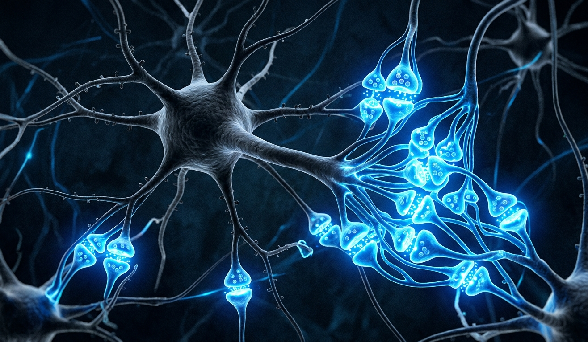
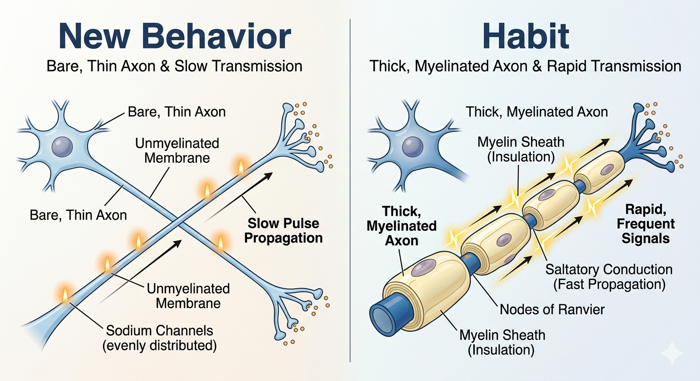
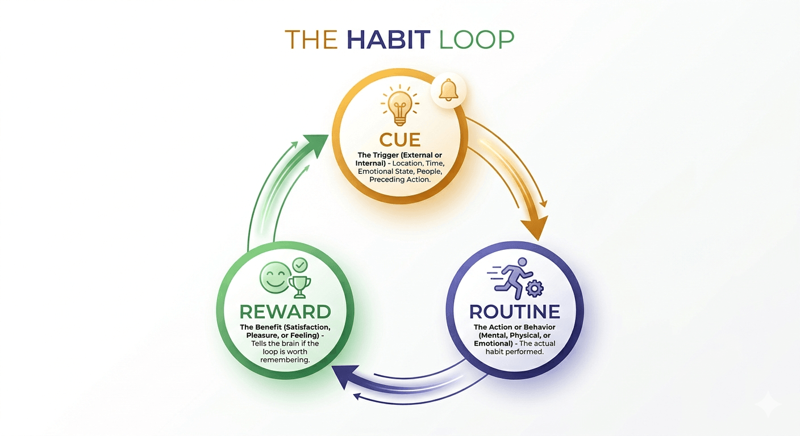
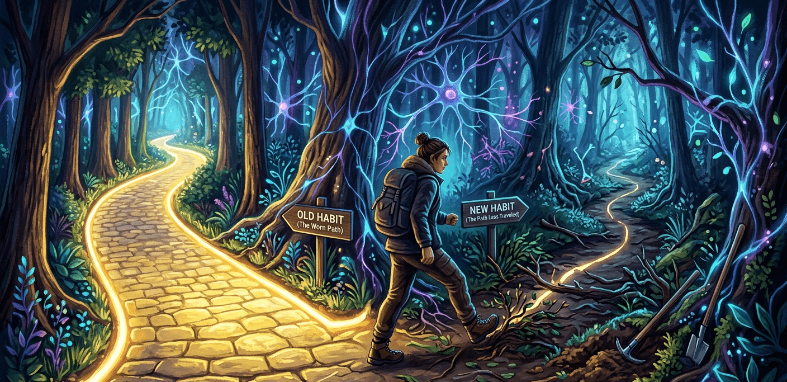

Your Brain Is Not Against You - It's Just Efficient
The real neuroscience behind why habits form, why breaking them hurts, and why the only way out is through a new one.

Have you ever tried to quit something - scrolling your phone in the morning, reaching for a cigarette, biting your nails, saying yes when you want to say no - and felt a strange, almost physical discomfort pulling you back?
You knew the old habit was bad. You wanted to change. And yet your body almost moved on its own. Like gravity. Like water finding a crack.
That's not weakness. That's not lack of willpower. That is your brain doing exactly what it was designed to do - and once you understand the neuroscience behind it, everything changes.
The Signal Inside Your Skull
Every thought you think. Every action you take. Every craving that surfaces at 2 AM. All of it begins with the same thing: a tiny electrical signal called an action potential.
Neurons - the nerve cells in your brain - communicate by firing these electrical impulses across gaps called synapses. When neuron A fires frequently enough to trigger neuron B, the synapse between them strengthens. The connection becomes more efficient, faster, easier to activate.
The Science: Hebb's Law (1949)
Neuropsychologist Donald Hebb first described this in 1949 with a phrase that has echoed through every brain science textbook since:
"Neurons that fire together, wire together."
Every time two neurons activate simultaneously, the synapse between them is reinforced - like clearing a trail through a forest. The more often you walk the same path, the clearer and wider it becomes.
But synaptic strengthening is only half the story. The other half is something called myelination.
Myelin: The Brain's Speed Highway
Running along each neuron's axon (the "wire" that carries signals forward) is a fatty white sheath called myelin. Think of it like the rubber insulation around an electrical cable.
When you repeatedly activate a neural pathway, your brain wraps more and more myelin around that axon. The result? Signals travel up to 100 times faster along myelinated pathways than unmyelinated ones.

This is why a professional pianist's fingers seem to move on their own, why a seasoned driver barely thinks about changing gears, why you can type without looking at the keyboard. Those pathways are superhighways - wide, fast, and well-lit.
A new behavior, by contrast, is a dirt path through a forest. It takes effort, attention, and often discomfort to walk it.
"A habit, in the brain's language, is simply a neural pathway that has been repeated so many times it becomes the path of least resistance."
The Habit Loop: Cue → Routine → Reward
Neuroscientist Ann Graybiel's research at MIT revealed that the brain doesn't just store habits - it chunks them. A repeated sequence of behavior gets packaged into a single, automatic unit managed primarily by the basal ganglia - a deep, ancient part of the brain.
Cue
Trigger
Routine
Behavior
Reward
Dopamine
Cue - A trigger in your environment or internal state (stress, a location, a time of day, an emotion) that activates the habit circuit.
Routine - The automatic behavior itself - what you actually do. Checking your phone, lighting a cigarette, biting your nails.
Reward - A release of dopamine (the brain's "feel good" neurotransmitter) that confirms to the brain: this was worth doing. Remember this for next time.
Over time, the cue alone is enough to trigger a powerful dopamine anticipation response. Your brain starts craving the reward before you've even done anything. This is why habits feel urgent - even irresistible.

Why Changing Habits Feels So Wrong
Here is the part that most people don't know - and that changes everything once they do.
The basal ganglia, which controls automatic habit behavior, operates largely outside conscious awareness. It is efficient, fast, and incredibly stubborn. When you try to break a habit, the conscious, rational part of your brain - the prefrontal cortex - has to actively override the basal ganglia.
This is neurologically exhausting. The prefrontal cortex requires much more glucose and mental effort to operate than the basal ganglia. When it tries to suppress a well-myelinated habit pathway, you experience this as:
- A feeling of restlessness or anxiety
- Irritability and low mood
- Intrusive thoughts about the habit
- A physical sense of "something is wrong"
- Mental fatigue and reduced focus
The Science: Long-Term Potentiation (LTP)
When a synapse is repeatedly activated, it undergoes Long-Term Potentiation - a persistent strengthening of that connection. The post-synaptic neuron becomes increasingly sensitive to signals from the pre-synaptic neuron.
This means the more you've practiced a habit, the lower the activation threshold becomes. It takes less and less stimulus to fire the same neural sequence. The habit becomes hair-trigger fast.
Conversely, a new behavior has a high activation threshold - it requires deliberate effort, conscious attention, and repeated failure before the synapse begins to strengthen.
The Most Important Truth: You Cannot Delete a Habit
This is perhaps the most crucial insight from modern neuroscience: habits are never truly erased from the brain.
The neural pathways that encode your old habits remain intact, dormant, ready to be reactivated by the right cue - even years later. This is why recovering addicts can relapse after a decade of sobriety. This is why old anxieties resurface under stress. The wiring is still there.
You do not break a habit. You replace it. The cue and the reward stay the same - only the routine changes.
What the brain can do is build a competing pathway - a new routine attached to the same cue and same reward - that, with repetition, becomes more dominant than the old one.
| Brain Factor | Old Habit | New Habit (early) | New Habit (established) |
|---|---|---|---|
| Myelination | Thick, fast automated | Thin, slow effortful | Growing thicker improving |
| Synaptic Strength | Very high (LTP established) | Very low (new connection) | Moderate to high |
| Brain Region | Basal ganglia (auto) | Prefrontal cortex (effort) | Transferring to basal ganglia |
| Dopamine Response | Strong anticipatory craving | Delayed, mild reward | Craving begins to transfer |
| Felt Experience | Effortless, automatic | Uncomfortable, tiring resist it | Increasingly natural |
| Can it be erased? | NO - ONLY SUPPRESSED | - | Becomes dominant over time |
How to Actually Replace a Habit (The Neuroscience Way)
Now that you understand what's happening in your brain, here is a step-by-step approach grounded in the neuroscience of habit replacement - not suppression.
-
1
Identify your cue precisely.
Track the habit for one week. Note what triggers it - time of day, emotion, location, social context. The cue is the anchor. You need to know it exactly.
-
2
Identify the real reward.
Ask: what am I actually getting from this? Stress relief? A sense of control? Social connection? Boredom relief? The routine is negotiable. The reward is not.
-
3
Design a new routine for the same cue and reward.
When the cue hits, insert a new behavior that delivers the same underlying reward. Stress → walk instead of smoke. Boredom → book instead of scroll.
-
4
Expect discomfort and plan for it.
The new pathway is unmyelinated. It will feel wrong, unnatural, insufficient. This is not failure - it is neurological growing pain. The discomfort is proof that new wiring is being laid.
-
5
Repeat relentlessly for 60-90 days.
Research suggests habit formation takes anywhere from 18 to 254 days depending on complexity. The average is around 66 days. Myelination and LTP take time. Every repetition counts.
-
6
Protect the new pathway from the old cue.
In early stages, if possible, change your environment to reduce exposure to the original cue. Remove the trigger to reduce the likelihood of slipping back onto the old highway.

A Final Word on Willpower
Willpower is real - but it is a finite resource. The prefrontal cortex, as we discussed, depletes with use. Trying to stop a habit through sheer willpower forces you to fight that cortex-vs-basal-ganglia battle every single time the cue appears.
Replacement, by contrast, redirects the signal. Instead of fighting the neural current, you dig a new channel for it to flow through. With enough repetition, the new channel becomes the natural one.
Your brain is not the enemy. It is the most sophisticated pattern-recognition and efficiency machine in the known universe. It built your habits because it was trying to help you - to save energy, to automate the familiar.
The question is simply: which patterns do you want it to automate next?
Join the Discussion
What's Your Habit Story?
Every person reading this has a habit they're proud of building - or one they're still wrestling with. Your experience might be exactly what someone else needs to hear. Drop your thoughts below. No judgment here - just people figuring out their brains together. 💬